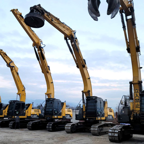
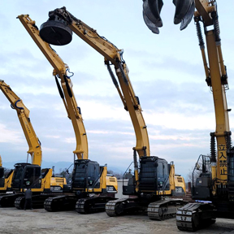
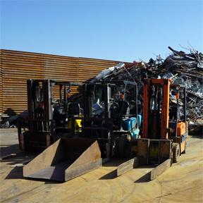
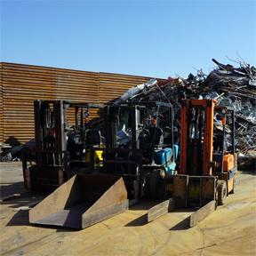
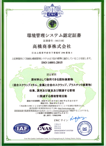

 



世界の資源リサイクルをめぐる環境は、国際的にさまざまな要因で質的変化を遂げています。
それに伴い、回収・処理・利用といった、それぞれに関わる事業者が対応を迫られている中、高橋商事は山梨県甲府市で創業以来、鉄・非鉄金属の買取から、プレス、粉砕、切断などの中間処理をへて、メーカーなどへの直接販売までを一貫して行っています。
地球規模での環境問題に対する関心やリサイクル意識も高まってきている中、私たちは、付加価値の高いリサイクル事業の維持・発展に努めるとともに、多様化するニーズに応じた処理を施し、資源リサイクルの一役を担うことで社会に貢献してまいります。
私たちの資源循環促進への取り組みが、皆様一人ひとりの快適な未来へつながっていくという強い想いを持って、これからも全社員の総力を結集し取り組んでいく所存です。
今後とも益々のご支援とご愛好を賜りますようお願い申し上げます。
高橋商事株式会社 代表取締役 高橋 浩
我が社は、鉄・非鉄金属のリサイクルを通じて、地球環境の保全と社会に貢献します。
人と環境に優しい事業活動を基盤とし、高度な中間処理技術で資源の再利用を促進しながら安定したリサイクル資源の供給を目指し、持続可能な未来の実現に取り組みます。
地球に優しい
環境に優しい
お客様に優しい
全ての人に優しい
リサイクルは優しさだ
会社名 |
高橋商事株式会社 |
設立 |
平成24年2月1日 |
資本金 |
3,000万円 |
本社 |
〒400-1508 山梨県甲府市下曽根町290-1 |
TEL・FAX |
055-288-1888 |
info@takahashisyouji.co.jp |
|
代表者 |
代表取締役 高橋 浩 |
従業員数 |
38名 |
主な事業内容 |
スクラップ全般、解体、回収高価買取 |
許可番号 |
・古物商 許可番号 第471022400050号 |
設備 |
・建設機械 16台（0.45 x 5台、0.7 x 6台、0.9 x 5台） |
事業所 |
■本社 ※ 全社（5月ゴールデンウィーク・8月お盆・年末年始）休業あり |
当社では、一貫した製品・サービスの提供および顧客満足の向上を目的として、国際標準化機構(ISO)の定める品質マネジメントシステムに関する国際規格「ISO 9001」および、環境を保護し、変化する環境状態に対応するために、同機構の定める環境マネジメントシステムに関する国際規格「ISO 14001」の認証を取得しました。
認証機関 |
Ever Win Quality Certification Center |
|
証書番号 |
品質管理システム認定証書  |
環境管理システム認定証書  |
当社は「地球に優しい会社」を合言葉にリサイクル事業を展開しております。地球規模での環境問題に対する関心が高まる中、付加価値の高いリサイクル事業を維持・発展させるため分別の高度化による資源品質の向上やリサイクル資源の安定的な供給を目指し、多様化するニーズに応じた処理の実施により、資源リサイクルの一役を担うことで「持続可能な開発目標（SDGs）」の達成に貢献し、持続可能な社会の実現に努めます。


本社・甲府・八田・白根・富士川の各事業所の紹介

会社案内、アピールポイント